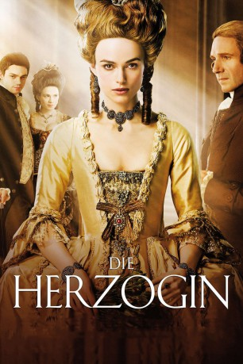

#5274 Die Herzogin
Alternativ: The Duchess
Auszeichnungen: 1 Oscars gewonnen für 1 Oscars nominiert 1 BAFTA-Awards gewonnen
 
 IMDB-Wertung: 6.9 / 10
IMDB-Wertung: 6.9 / 10  Metascore: 0
Metascore: 0 
Im späten 18.Jahrhundert wird die junge Georgiana mit dem Herzog von Devonshire verheiratet, jedoch muß sie bald feststellen, daß es sich um keine Liebesheirat gehandelt hat, da es ihm in erster Linie darum geht, einen männlichen Erben zu zeugen. Doch während Georgiana leider nur weibliche Nachkommen auf die Welt bringt, steigt sie in der adeligen Gesellschaft jedoch im Ansehen auf, ist sie doch wesentlich unterhaltsamer, forscher und interessierter als ihr Ehemann. Die Situation ändert sich erst, als sie Lady Beth Foster kennenlernt, die von ihrem Mann verstoßen wurde und zu ihrer Freundin wird. Jedoch hegt sie Hintergedanken, denn da sie wieder Kontakt zu ihren Kindern will, sucht sie eine Affäre ausgerechnet mit dem Herzog, der auf ihre Avancen eingeht. Georgiana ist erschüttert, doch sie sucht sich schon bald selbst einen Liebhaber: Charles Grey. Doch juristisch gesehen hat sie als Ehefrau keinerlei Rechte und steht alsbald vor derselben Situation wie Beth...
Jahr: 2008
Dauer: 110 Minuten
FSK: 12
Land: England Studio: Kinowelt FilmverleihTonspuren: DTS - ,
Untertitel: Deutsch,
Auflösung: 1080p (1920x816) Größe: 6686 MB
Genre: Drama, Liebe, Geschichte, Biographie
Regisseur: Saul Dibb
Drehbuch: Jeanne Ryan
Soundtrack:
Darsteller:
 Keira Knightley als Georgiana
Keira Knightley als Georgiana Ralph Fiennes als The Duke
Ralph Fiennes als The Duke Charlotte Rampling als Lady Spencer
Charlotte Rampling als Lady Spencer Dominic Cooper als Charles Grey
Dominic Cooper als Charles Grey Hayley Atwell als Bess Foster
Hayley Atwell als Bess Foster Simon McBurney als Charles Fox
Simon McBurney als Charles Fox- Aidan McArdle als Richard Sheridan
 John Shrapnel als General Grey
John Shrapnel als General Grey Alistair Petrie als Heaton
Alistair Petrie als Heaton Patrick Godfrey als Dr. Neville
Patrick Godfrey als Dr. Neville Justin Edwards als Macaroni
Justin Edwards als Macaroni Richard McCabe als Sir James Hare
Richard McCabe als Sir James Hare Bruce Mackinnon als Sir Peter Teazle
Bruce Mackinnon als Sir Peter Teazle Georgia King als Lady Teazle
Georgia King als Lady Teazle- Luke Norris als Footman
- Kate Burdette als Lady Harriet
- Benjamin Noble als Lord Ambrose
 Max Bennett als Lord Walter
Max Bennett als Lord Walter- Camilla Arfwedson als Lady Charlotte
 Thomas Arnold als Dealer
Thomas Arnold als Dealer- Katerina Tana als Guest at Lady Melbourne's Ball
 Leigh Daniels als Dancer , uncredited
Leigh Daniels als Dancer , uncredited Julie Eagleton als Aristocrat , uncredited
Julie Eagleton als Aristocrat , uncredited- Helen Holman als Theatre Patron , uncredited
 Dale Mercer als Bess's Dance Partner , uncredited
Dale Mercer als Bess's Dance Partner , uncredited- Carl Robinson als Footman 2 , uncredited
- Michael Thomson als Red Coats Soldier , uncredited
- Michael Medwin als Speechmaker
- Calvin Dean als Devonshire House Servant
- Hannah Stokely als Devonshire House Maid
- Andrew Armour als Burleigh
- Emily Jewell als Nanny
- Eva Hrela als Charlotte, Age 3
- Poppy Wigglesworth als Charlotte, Age 9
- Emily Cohen als Harryo
- Mercy Fiennes Tiffin als Little G
- Sebastian Applewhite als Augustus
- Angus McEwan als Lord Robert
- Laura Stevely als Lady Elizabeth
- Fiona Sheehan als Young Girl in Theatre
- Sarah Wyatt als Servant Girl
- Gilbert Wynne als Althorpe Servant
- Richard Curzon als Heaton's Clerk
- Sophia Johnston als Guest at Lady Melbourne's Ball
- Ailsa Baker als Aristocrat at political rally , uncredited
- Daniel Bardwell als Gamer , uncredited
- Cristóbal Blanco García als Aristocrat , uncredited
- Cris Blanco als Aristocrat at Political Rally , uncredited
- Philippa Burt als Party Guest , uncredited
- John K. Duncan als Devonshire Servant , uncredited
Datei: X:\2008(G-M)\Herzogin, Die (2008, FSK12, 1920x816).mkv seit 09.01.2017
Festplatte: HD 2008(G-Z)-2009(A-F)
 Es gibt insgesamt 73 Filme in der Gruppe '2008(G-M)'
Es gibt insgesamt 73 Filme in der Gruppe '2008(G-M)'